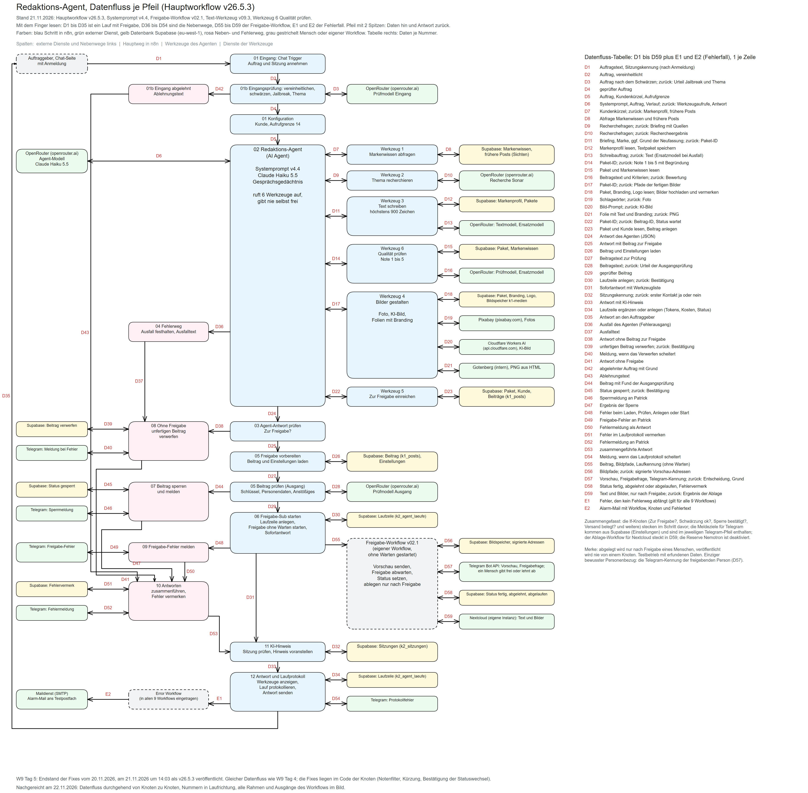

- Rahmen: Feature Freeze war Do 19.11.2026 abends. Ab dem Hard Freeze am Di 24.11.2026 wird nichts mehr geändert, bis dahin nur Fixes echter Fehler. Die Dokumentation ist spätestens Mi 25.11.2026 fällig, die Präsentation dauert 15 Minuten mit Fragen.
- Hauptworkflow: Behauptete Ziffernnoten werden aus der Antwort entfernt, die Aufrufgrenze steht bei 14 Werkzeugaufrufen, die Iterationsgrenze bei 16. Fehlt eine Note zum eingereichten Paket, steht in Telegram „Achtung, Endtext ungeprüft“. Die Laufzeile entsteht vor dem Start der Freigabe und wird von der Datenbank bestätigt, ebenso die Sperre eines Beitrags.
- Text-Werkzeug v09.3: Gekürzt werden nur ganze Sätze aus Absätzen ohne Einschränkung. Reicht das nicht, schreibt das Modell den Post 1 Mal neu.
- Freigabe-Workflow v02.1: Die Statuswechsel „fertig“, „abgelehnt“ und „abgelaufen“ gelten erst, wenn die Datenbank genau 1 Zeile mit Beitragskennung und Zielstatus zurückgibt.
- Live: Alle 3 Workflows wurden gemeinsam am 21.11.2026 um 14:03 veröffentlicht, nach unabhängiger Prüfung und Lauf 4047. Die Abnahme am veröffentlichten Stand steht in W9 Tag 4, Kapitel 5.
Kapitel 1
Rahmen des Tages
Rückblick auf Woche 9, Zeitplan bis zur Präsentation.
| Was | Wann | Was es für das Projekt heißt |
|---|---|---|
| Feature Freeze | Do 19.11.2026 abends | keine neuen Funktionen mehr; Werkzeug 6, Chat-Seite und Freigabe-Workflow waren bis dahin eingebaut (W9 Tag 4) |
| Hard Freeze | Di 24.11.2026 | danach nichts mehr ändern; bis dahin nur Fixes echter Fehler, Styling der Oberfläche bleibt erlaubt |
| Dokumentation | spätestens Mi 25.11.2026 | Projektdokumentation als PDF mit allen MUSS-Kriterien, dazu eine Setup-Anleitung als eigenes Kapitel; die Präsentationsfolien werden mit abgegeben |
| Präsentation | Do 26.11.2026 | 15 Minuten mit Fragen, rund 10 Minuten Vortrag; Live-Demo mit Grundfunktion und dem Besonderen des Systems |
Die Arbeit des Tages galt deshalb nur Fehlern, die in den Prüfungen vom 19.11.2026 offen geblieben waren. Hauptworkflow, Text-Werkzeug und Freigabe-Workflow sollten gemeinsam live gehen, damit eine einzige Messrunde für alle 3 reicht.
Kapitel 2
Gebaut: Fixes ohne neue Funktion
Jede Zeile ist ein Entwurf vom 20.11.2026; veröffentlicht wurde der Endstand am 21.11.2026.
| Version | Was sich ändert | Warum |
|---|---|---|
| Hauptworkflow v26.3 | Behauptete Ziffernbewertungen werden aus der Antwort entfernt; Aufrufgrenze 12 auf 14, Iterationsgrenze 14 auf 16; Zeile „Qualitätsprüfung: Achtung, Endtext ungeprüft“ an 7 Stellen, wenn die Note nicht zum eingereichten Paket gehört | Die Regeln des Systemprompts erlauben bis zu 14 Aufrufe; mit 12 wären regelgerechte Beiträge verworfen worden. Die Warnzeile hebt sich in Telegram vom Gutfall ab. |
| Hauptworkflow v26.4 | Grenze von 14 Aufrufen als nachträgliche Prüfung der Ausgabe beschrieben; Notenfilter prüft den Trenner hinter der Ziffer | Messläufe 4042 und 4043 an einer Messkopie: die Grenze greift erst nach den Werkzeugaufrufen, nicht davor |
| Hauptworkflow v26.5 bis v26.5.2 | Laufprotokoll nur mit festen Codes und geschwärztem Freitext; Laufzeile vor dem Start der Freigabe, von der Datenbank bestätigt; Sofortantwort „Die Freigabe wird vorbereitet.“; Freigabe-Fehler nennt den Schritt; Sperre eines Beitrags wird bestätigt | Bisher konnten ein Statuswechsel oder eine Laufzeile still fehlen (W9 Tag 4, Kapitel 8) |
| Freigabe-Workflow v02 und v02.1 | Fehlervermerk im Laufprotokoll trifft genau 1 Zeile, sonst Meldung; die 3 Statuswechsel werden bestätigt, sonst Freigabe-Fehler mit Schritt; am 21.11.2026 Einheit der Wartezeit ausdrücklich auf Sekunden gesetzt | Ein Statuswechsel ohne Treffer endete vorher ohne Meldung |
| Text-Werkzeug v09.3 | Gekürzt werden nur ganze Sätze aus Absätzen ohne Einschränkungswort; ein Absatz mit „nicht“, „nur“, „aber“, „kein“ und ähnlichen Wörtern bleibt ganz, ebenso der Satz davor; bleibt der Post über 900 Zeichen, fasst das Modell ihn 1 Mal neu, beim 2. Mal gibt das Werkzeug einen Fehler zurück; Zeitspannen mit „bis“, Abkürzungen trennen keine Sätze | Die Kürzung hatte den kürzesten Satz gestrichen und damit die Aussage umgedreht (Beispiel: „Aber nicht für Reparaturen.“ fiel weg) |
Alle Änderungen betreffen nur Code in vorhandenen Knoten, Notiztexte und einzelne neue Prüfknoten. Die Positionen der vorhandenen Knoten blieben unverändert. In der Nacht zum 21.11.2026 wurde der Hauptworkflow neu angeordnet (Rahmen 01 bis 12 in Laufrichtung), ohne die Logik zu ändern; deshalb fielen Veröffentlichung, Messung und Fotos auf den 21.11.2026.
Kapitel 3
Getestet
Proben am Code, Messläufe und die Abnahme am veröffentlichten Stand.
- Kürzung im Text-Werkzeug: 18 Fehlerfälle an einem Tag, je mit Ursache, Fix und Test, alter gegen neuer Stand; vollständig in W9 Tag 4, Kapitel 8. Jede neue Regel für Satzzeichen erzeugte einen neuen Randfall, deshalb streicht der Code am Ende nur noch, wo es sicher ist, und lässt sonst das Modell neu schreiben.
- Aufrufgrenze: Messläufe 4042 und 4043 an einer Messkopie. Ergebnis: Die Grenze von 14 wird nach den Werkzeugaufrufen geprüft; sie verhindert einen Beitrag mit zu vielen Aufrufen, aber nicht die Aufrufe selbst.
- Vor dem Veröffentlichen: unabhängige Prüfung jedes Entwurfs; Lauf 4047 im Editor am Stand v26.5.3, 12 Minuten vor dem Veröffentlichen am 21.11.2026.
- Nach dem Veröffentlichen: Läufe 4056 und 4064 über die veröffentlichte Chat-Seite, beide bis zur Ablage in Nextcloud; Freigeben und Ablehnen in Telegram belegt (W9 Tag 4, Kapitel 5).
Projekt 1 am selben Tag: Ein Probelauf der Content-Maschine K1 brach mit einer Zeitüberschreitung beim Senden der Vorschaubilder an Telegram ab. Ein Messlauf an einer Kopie zeigte, dass das Hängen nur zeitweise auftritt. Das betrifft Projekt 1, nicht den Redaktions-Agenten; K2 schickt die Vorschau als Text.
Kapitel 4
Entschieden
Festlegungen des Tages für Bau, Doku und Präsentation.
- Bleibt der Post nach der Kürzung über 900 Zeichen oder müsste ein Satz abgeschnitten werden, wird eine Neufassung angefordert.
- Sätze mit Einschränkungswort und der Satz davor werden nie gestrichen; ein Absatz mit Schutzwort wird gar nicht gekürzt.
- Die Aufrufgrenze bleibt eine nachträgliche Prüfung der Ausgabe und ist so dokumentiert.
- Hauptworkflow, Text-Werkzeug und Freigabe-Workflow gehen zusammen live, danach folgt 1 gemeinsame Messrunde.
- Die Setup-Anleitung wird ein eigenes Kapitel der Dokumentation, mit einem Teil zum Aufbau und einem zum Aufsetzen.
- Die Präsentationsfolien werden mit der Dokumentation abgegeben.
Kapitel 5
Plan des Tages
Datenfluss auf dem Endstand der Fixes.

